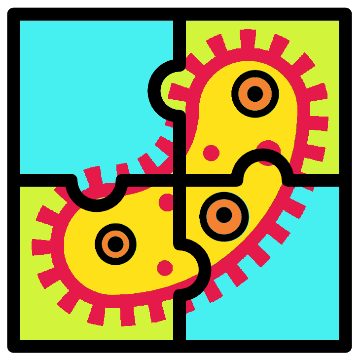

Bacterial genome assembly and annotation
2021-09-09

Chapter 1 Introduction

This practical session will run you through a standard bacterial genome assembly and annotation workflow using PacBio data. The topics covered are:
- Setup
- Overview
- Genome assembly with
Redbean(wtdbg2) - Assembly assessment
- Polishing with
arrow - Circularisation with
Circlator - Annotation with
Prokka - Final report generation with
MultiQC
The aim of this practical is to produce a genome assembly of Eschrichia coli, annotate it, and produce a report with the assembly’s stats. Read QC will be skipped as this has been covered in a previous NEOF workshop.
Commands are in the following font, colour, and box.They should be run in the command line.
echo "This is a command example" 
This work is licensed under a Creative Commons Attribution-NonCommercial-ShareAlike 4.0 International License.